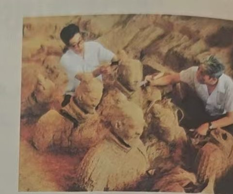

第 01 阶段 / 遗产观察
从兵马俑开始：遗产能告诉我们什么？
从历史遗存进入秦朝的课堂探究
5 分钟
本环节核心问题一项文化遗产，能够证明什么？又不能证明什么？
01 · 教材原始证据
教材第52页
兵马俑考古发掘现场
图片源自本次上传的教材照片
02 · 语义联系探索
CIDOC CRM · 事件中心⌘
从兵马俑追溯秦代历史背景
选择文化遗产，以它为起点查找相关事件、时空、人物与教材证据。
图谱内容来自 Neo4j 数据快照；需要更新时重新导出数据并发布。
03 · 学习任务
判断：材料能支持哪些历史认识？
探究记录 0 次